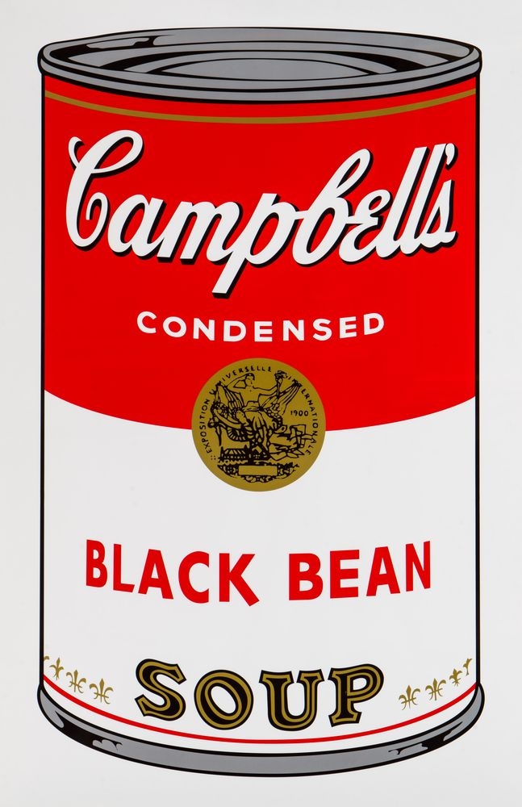
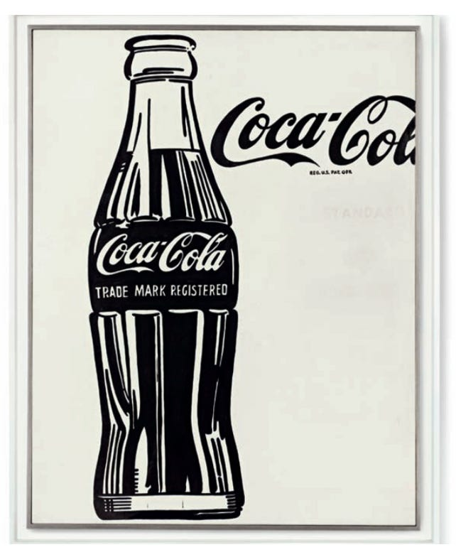

Galeria



Biografia
Andy Warhol, urodzony 6 sierpnia 1928 roku w Pittsburghu, Pensylwania,
to amerykański artysta, reżyser filmowy i pionier ruchu artystycznego
znanego jako pop art. Jego ekscentryczny styl, eksperymenty z kolorami
i technologią oraz fascynacja kulturą masową uczyniły go jednym z
najbardziej rozpoznawalnych artystów XX wieku.
Warhol rozpoczął swoją karierę jako ilustrator i projektant reklamowy,
ale szybko przeniósł się do świata sztuki, inspirując się popularną
kulturą i komercjalizmem. Jego prace, takie jak "Puszka z zupą
pomidorową" i "Sto Coca-Coli", stały się ikonami pop artu, poddając
analizie konsumpcję i masową produkcję.
Jako lider The Factory, swojego studia artystycznego w Nowym Jorku,
Warhol otworzył drzwi dla nowego podejścia do sztuki. Tworzył
serigrafie, wykorzystywał obrazy celebrytów, takich jak Marilyn Monroe
czy Elvis Presley, i eksperymentował z techniką reprodukcji.
Poza malarstwem, Warhol wyreżyserował kilka filmów, w tym słynny
"Chelsea Girls". Jego eksploracja sztuki, filmu i muzyki uczyniła go
jednym z najbardziej wpływowych postaci swojej epoki.
Andy Warhol zmarł 22 lutego 1987 roku w Nowym Jorku, pozostawiając po
sobie nie tylko zbiór znakomitych dzieł, ale również trwałe
dziedzictwo kształtowania sztuki współczesnej. Jego motto "15 minut
sławy dla każdego" stało się symbolem zmieniającej się natury kultury
popularnej.
Dzieła
| Dzieło sztuki | Czas powstania |
| Puszki z zupą firmy Campbell | 1962 |
| Shot Marilyns | 1964 |
| Coca-Cola | 1962 |
| Orange Prince | 1984 |
| Potrójny Elvis | 1963 |
Ciekawostki
- Studia plastyczne rozpoczął już jako 14 letni chłopak.
- Niewłaściwie uznaje się go za twórcę pop artu – pop art narodził się w Anglii.
- Swoją artystyczną karierę rozpoczął w reklamie.
- Zaczął się fascynować (i tworzyć jej liczne portrety) Marylin Monroe tuż po jej śmierci.